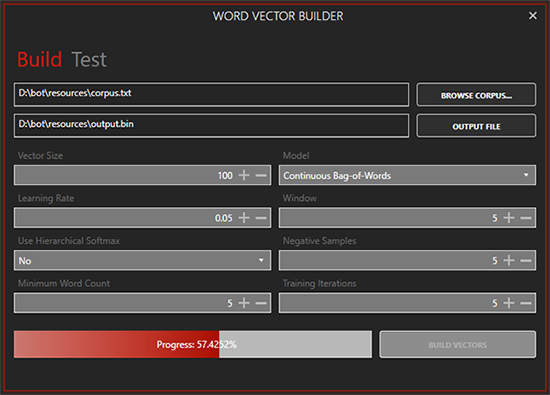
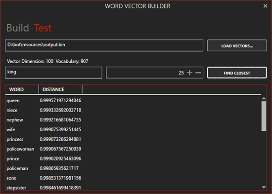

Loading Word Vectors
Apart from connecting Oscova to a lexical database (like WordNet via Syn.WordNet) for improving word relatedness measurement, the Language property of OscovaBot also allows loading of Word embeddings generated by Word2Vec model. You can either connect WordNet or load word vectors from pre-trained data files.
Training Corpus
Selecting the right training corpus is crucial for generating word vectors that closely capture the linguistic context of words. The corpus should mainly contain sentences that relate to the domain addressed by the Bot. For example, if your bot deals with pizza ordering then you are better off training word vectors based on previous chat logs generated by real customers. It is also important to note that larger corpus tend to yield better word vectors.
Syn Bot Studio
Especially for usage in Oscova, we have added the Word Vector Builder tool in Syn Bot Studio. The tool does offer a plethora of options to tweak the training process used in Word2Vec model.
To continue with this tutorial you'll need to install Syn Bot Studio. To download Syn Bot Studio click here, extract the setup file and follow the instructions in the installation wizard.
Building word vectors
First and foremost we'll need a corpus of text to generate word vectors. The file must be a text file with all words/tokens separated by space character. The larger the corpus the better will be the word vector representation.
To follow up with this tutorial you may download an example corpus here
- Extract the corpus.zip file
- Run Syn Bot Studio
- Click on Tools and select Word Vector Builder
- Click on Browse Corpus... button and select the extracted
corpus.txtfile. - Now click on the Output File button and name the file
output.bin - Finally click on the Build Vectors button.

It should take a couple of seconds to build the vectors. Once completed Syn Bot Studio will open the parent folder of the selected output file.
Testing built word vectors
- In the Word Vector Builder window select the Test tab.
- Click on Load Vectors... and select the
output.binfile. - Once loaded, type king in the search box and press Find closest.

You'll notice that words sharing the same context are placed close to each other in the vector space.
Loading word vectors into Oscova
Once word vectors have been generated in either bin or txt file format. It is relatively easy to load them into Oscova. In the code below we call the LoadWordVectors method on the Language property and pass in the vector data file as a FileStream.
var bot = new OscovaBot();
var fileStream = new FileStream(@"D:\output.bin", FileMode.Open);
bot.Language.LoadWordVectors(fileStream, FileFormat.Binary);
...
bot.Train();